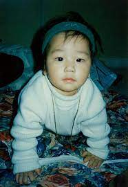
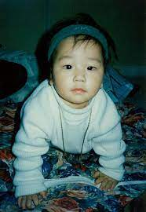
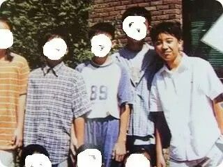
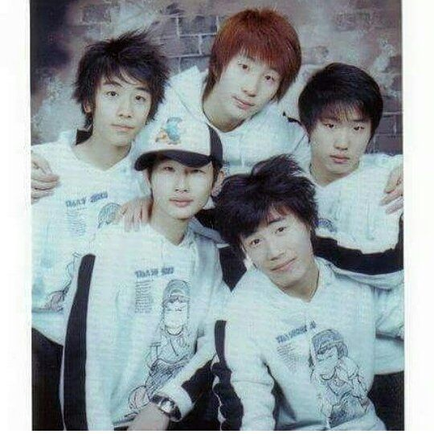
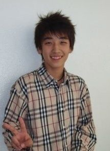
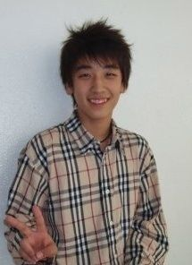
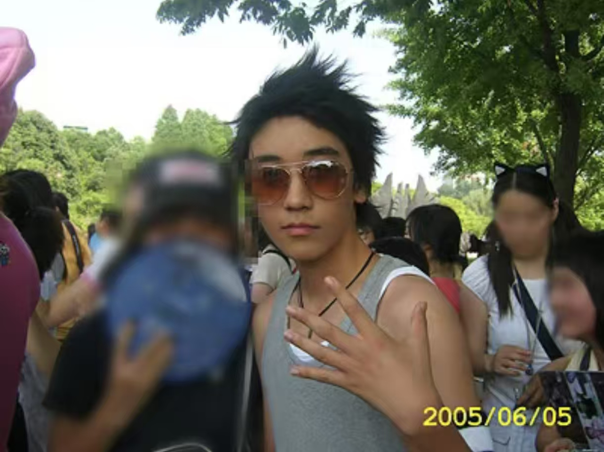
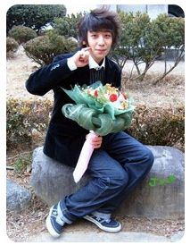
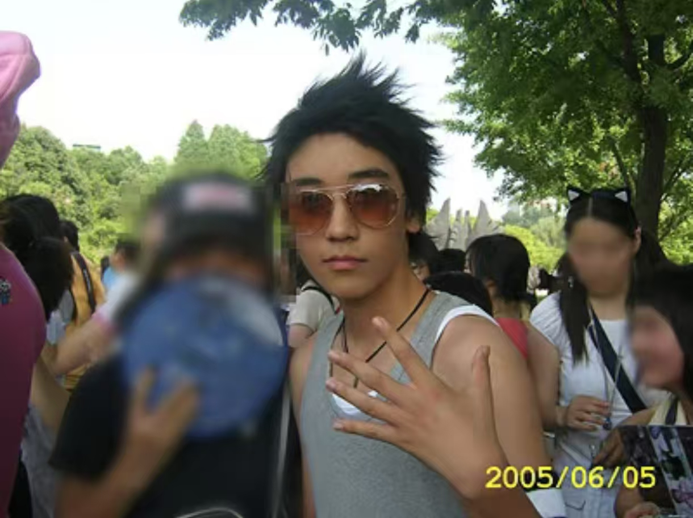
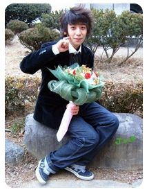

胜利出道前
出道前2004年到2006年
1991年1月29日出生于光州广域市，父亲是职业高尔夫球运动员
而在胜利国小的时候，因为天灾导致父亲的高尔夫球场损毁，从而欠下一笔巨款
从小热爱表演，尤其是街舞和Hip-Hop风格的舞蹈，在学生时期便常常参加街头舞蹈比赛，以"舞蹈机器"闻名
2003年6月-2005年1月期间，14岁的他是光州当地小有名气的舞蹈团体"Il Hwa"的成员
2005年，15岁参加选秀节目，但唱功弱被淘汰，后被YG娱乐挖去那里做练习生
2006年初，被选为候选练习生参与了出道选拔真人秀（出道实录）
与GD、太阳、TOP、大声和张贤胜一同竞争正式成员席位
出道实录中因唱功再次面临淘汰，后通过补试环节与张贤胜竞争
：对比其他成员练习时间较短（约一年内），以唱功和跳舞潜力赢得菊花社长杨贤硕认可
2006年中，第二次竞争里张贤胜被淘汰，胜利成为正式成员
：由于出道年龄不符合标准，所以胜利的出生日期被公司改成1990年12月12日
5人组合以Bigbang命名，于2006年8月19日正式出道
 


我是莉莉的兵，所以有很多他的照片，ot4不欢迎哈
2004年前（应该是在小学的时候）
小小的胜利脱口秀
他说：大家好，我是胜贤。我记得胜贤很愚蠢，很无知。总是唠叨又像个傻瓜的胜贤就是个混蛋。你们还记得那些记忆，以及留在你们记忆中的记忆。我希望是胜贤和孩子是杀手微笑伙计们，以后会记得我。等我长大了，我就会来找你。再见，大家。
其实是YouTube自带翻译出来的，翻译肯定不准

我第一次看到小学时期图片还以为不是胜利本人呢，到初中跳舞才瘦下去的
下面的视频来自@小猪搞快跑 点击进入观看完整视频
2004年初
他是韩国光州的街舞团体 Il Hwa（일화） 的成员之一
该团体活跃于2003年8月-2005年1月期间
主要在光州地区的公共活动和街头表演中亮相


2004年
在光州的Il Hwa组合表演（飙高音cut）
2004年
和Il Hwa组合一起在洪吉童庆典表演
 



 





2005年
参与Let's Coke Play! Battle Shinhwa的选秀节目
但由于当时的唱功相对较弱，在第九集中被淘汰
From YouTube by @arashinhwa

2006年7月10日
胜利跳舞（值得一看）
2006年7月10日
GD 太阳 胜利练习舞蹈
2006年7月14日
胜利唱歌POP
疑似太阳和大声一起为胜利和音
2006年7月14日
太阳 胜利 TOP唱Pop Your Collar